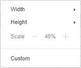

Skaliranje radnog lista
Ako želite da ceo radni list uklopite na jednu stranicu za štampanje, možete koristiti funkciju Scale to Fit. Ova funkcija u Spreadsheet Editor omogućava skaliranje podataka na određeni broj stranica.
Da biste to uradili, pratite ove jednostavne korake:
- na gornjoj alatnoj traci, otvorite karticu Layout i izaberite funkciju Scale to fit,
- u odeljku Height izaberite 1 page, a Width podesite na Auto da biste odštampali ceo list na jednoj stranici. Vrednost skaliranja biće automatski promenjena. Ova vrednost se prikazuje u odeljku Scale;
- vrednost skaliranja možete promeniti i ručno. Da biste to uradili, podesite parametre Height i Width na Auto i koristite dugmad «+» i «-» da biste promenili razmeru radnog lista. Ivice stranice za štampanje biće označene isprekidanim linijama u tabeli,

- na kartici File, kliknite na Print ili koristite prečice na tastaturi Ctrl + P i podesite opcije štampanja u otvorenom prozoru. Na primer, ako na listu ima mnogo kolona, može biti korisno da promenite Page Orientation na Portrait. Ili da odštampate prethodno izabrani opseg ćelija. Više informacija o podešavanjima štampe možete pronaći u ovom članku.

Napomena: imajte na umu da štampani dokument može biti teško čitljiv, jer uređivač smanjuje podatke kako bi ih uklopio.